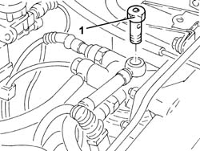
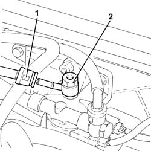
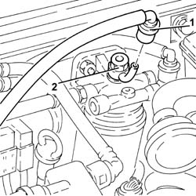

1044B16 delivery adjustment valve - r r
- Path
- Procedures > 10 ENGINE > 1044 FUEL CIRCUIT PUMP/AND DEVICES > 1044B fuel filters > 1044B16 delivery adjustment valve - r r
- Kind
- repair procedure (removal / refitting; the operation number is the code)
- Applies to
- engines: 1.9 JTD 8v , 1.9 JTD 16v, 2.4 JTD 10v, 2.4 JTD 20v; all production periods
- Interactive page
- https://sloeber94.github.io/elrnDB-a156/en/#/3237778
Applies to: engines: 1.9 JTD 8v , 2.4 JTD 10v; all production periods
 Removing
Removing
 Refitting
Refitting1. Undo the connection, with built-in adjustment valve, securing fuel filter supply pipe to the fuel return manifold pipe

Applies to: engines: 1.9 JTD 8v , 2.4 JTD 10v; all production periods
Refitting
RemovingTighten the connection, with built-in adjustment valve, securing fuel filter supply pipe to the fuel return manifold pipe
Applies to: engines: 1.9 JTD 16v; all production periods
Removing
RefittingProceed with removal 1016A10 sound-proofing cover - r + r .
1. Disconnect the rapid attachment on the fuel return pipe to the fuel return manifold pipe, fuel filter side.
2. Undo the connector with the fuel supply/return adjustment valve incorporated.

Applies to: engines: 1.9 JTD 16v; all production periods
Refitting
RemovingTighten the connector with the fuel supply/return adjustment valve incorporated.
Connect the rapid attachment of the front fuel return pipe to the fuel return manifold pipe, fuel filter side.
Proceed with refitting 1016A10 sound-proofing cover - r + r .
Applies to: engines: 2.4 JTD 20v; all production periods
Removing
Refitting1. Disconnect the rapid attachment on the fuel return pipe to the fuel return manifold pipe, fuel filter side.
2. Undo the connector with integrated regulating valve.

Applies to: engines: 2.4 JTD 20v; all production periods
Refitting
RemovingRefit the connector with integrated regulating valve in its seating and tighten it.
Connect the rapid attachment of the fuel return pipe to the fuel return manifold pipe, fuel filter side.